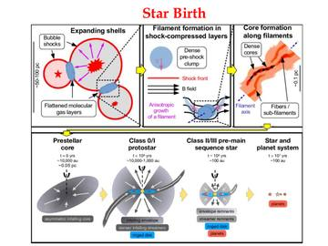
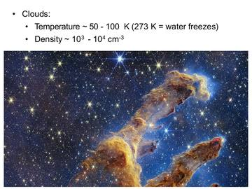
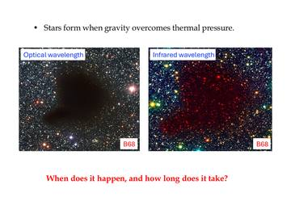
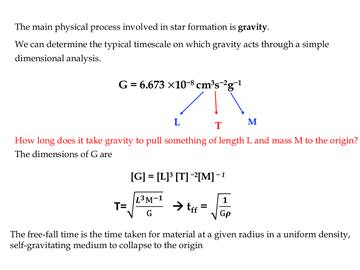
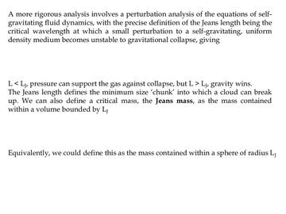
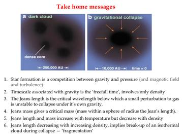
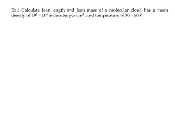
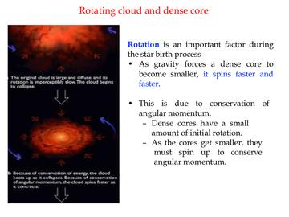
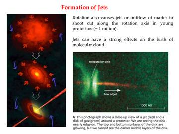

L2 Star FormationL2 Sự hình thành sao
Stars form in cold molecular clouds when gravity wins over pressure. Two numbers measure the fight: the free-fall time (how fast gravity acts, depends only on density) and the Jeans length and mass (the size and mass above which gravity wins). As the core shrinks it spins faster, flattens into a disk and may launch jets. This is the lecture with calculations: master t_ff and the Jeans formulas.Sao hình thành trong các đám mây phân tử lạnh khi trọng lực thắng áp suất. Hai đại lượng đo cuộc đấu này: thời gian rơi tự do (trọng lực tác động nhanh thế nào, chỉ phụ thuộc mật độ) và độ dài, khối lượng Jeans (kích thước và khối lượng mà trên đó trọng lực thắng). Khi lõi co lại nó quay nhanh hơn, dẹt thành đĩa và có thể phóng jet. Đây là bài có tính toán: nắm chắc t_ff và công thức Jeans.
L2 17 slide pages · 30 practice questions17 trang slide · 30 câu luyện tập · Practice this lectureLuyện bài này
Memory hooksMẹo nhớ
Life cycle and birth of a starVòng đời và sự ra đời của một sao
- Life cycle: stellar nebula → medium-mass star → red giant → planetary nebula → white dwarf; massive star → red supergiant → supernova → neutron star or black hole. [L2 p1]Vòng đời: tinh vân sao → sao khối lượng trung bình → sao đỏ khổng lồ → tinh vân hành tinh → sao lùn trắng; sao khối lượng lớn → siêu khổng lồ đỏ → siêu tân tinh → sao neutron hoặc lỗ đen. [L2 tr.1]
- Star birth chain: prestellar core → Class 0/I protostar → Class II/III pre-main-sequence star → star and planet system; the cores form along filaments in shock-compressed layers. [L2 p2]Chuỗi ra đời của sao: lõi tiền sao → tiền sao Lớp 0/I → sao tiền dãy chính Lớp II/III → hệ sao và hành tinh; các lõi hình thành dọc theo filament trong lớp bị nén sốc. [L2 tr.2]


Molecular cloudsĐám mây phân tử
- Stars are born in molecular clouds: molecular hydrogen (H₂) gas and dust grains; mass ~10⁵ to 10⁶ M☉; size ~150 light-years. [L2 p3]Sao sinh ra trong đám mây phân tử: khí hydro phân tử (H₂) và hạt bụi; khối lượng ~10⁵ đến 10⁶ M☉; kích thước ~150 năm ánh sáng. [L2 tr.3]
- Clouds: temperature ~50 to 100 K, density ~10³ to 10⁴ cm⁻³. (The exercise on p13 uses 30 to 50 K: the slides differ, state which you use.) [L2 p4, p13]Đám mây: nhiệt độ ~50 đến 100 K, mật độ ~10³ đến 10⁴ cm⁻³. (Bài tập tr.13 dùng 30 đến 50 K: slide không thống nhất, hãy nêu bạn dùng giá trị nào.) [L2 tr.4, 13]
- Images: Herschel 250 µm and IRAM 1.25 mm of a filament; Pillars of Creation; B68 in optical and infrared. [L2 p3-7]Ảnh: Herschel 250 µm và IRAM 1,25 mm của một filament; Cột Sáng Tạo; B68 ở quang học và hồng ngoại. [L2 tr.3-7]



Free-fall timeThời gian rơi tự do
- Stars form when gravity overcomes thermal pressure; the question is how long it takes. [L2 p5-7]Sao hình thành khi trọng lực thắng áp suất nhiệt; vấn đề là mất bao lâu. [L2 tr.5-7]
- Dimensional analysis: G = 6.673×10⁻⁸ cm³ s⁻² g⁻¹, so [G] = L³ T⁻² M⁻¹. A time must be T = √(L³ M⁻¹ / G); with M/L³ = ρ this gives t_ff = √(1/(Gρ)). [L2 p8]Phân tích thứ nguyên: G = 6,673×10⁻⁸ cm³ s⁻² g⁻¹, nên [G] = L³ T⁻² M⁻¹. Một thời gian phải là T = √(L³ M⁻¹ / G); với M/L³ = ρ ta được t_ff = √(1/(Gρ)). [L2 tr.8]
- Meaning: the time for material at a given radius in a uniform, self-gravitating medium to collapse to the origin. It depends only on the density. [L2 p8, p12]Ý nghĩa: thời gian để vật chất ở một bán kính nào đó trong môi trường đồng nhất tự hấp dẫn rơi vào tâm. Chỉ phụ thuộc mật độ. [L2 tr.8, 12]
- The exact free-fall of a uniform sphere has a prefactor: t_ff = √(3π/(32Gρ)) = 0.54 × the slide value [ext, checked numerically here by integrating the equation of motion].Rơi tự do chính xác của quả cầu đồng nhất có thêm hệ số: t_ff = √(3π/(32Gρ)) = 0,54 × giá trị trên slide [ngoài slide, đã kiểm bằng tích phân phương trình chuyển động].
- Worked numbers (n = 10³ to 10⁴ cm⁻³, μ = 2 to 2.33): slide form 0.62 to 2.13 Myr; full form 0.34 to 1.16 Myr. Order of magnitude: about 1 Myr. [calc]Số liệu tính (n = 10³ đến 10⁴ cm⁻³, μ = 2 đến 2,33): dạng slide 0,62 đến 2,13 triệu năm; dạng đầy đủ 0,34 đến 1,16 triệu năm. Bậc độ lớn: khoảng 1 triệu năm. [tính]


Sound speed, Jeans length and Jeans massTốc độ âm, độ dài và khối lượng Jeans
- Gas resists collapse with pressure (a pressure gradient). Pressure changes travel at the sound speed c_s; the sound-crossing time over a length L is t_s = L / c_s. [L2 p10]Khí chống sụp đổ bằng áp suất (gradient áp suất). Nhiễu áp suất truyền với tốc độ âm c_s; thời gian âm truyền qua độ dài L là t_s = L / c_s. [L2 tr.10]
- Setting t_s = t_ff gives the critical length where pressure and gravity act equally fast: the Jeans length (Jeans 1902). [L2 p10]Cho t_s = t_ff ta được độ dài tới hạn mà ở đó áp suất và trọng lực tác động nhanh như nhau: độ dài Jeans (Jeans 1902). [L2 tr.10]
- L < L_J: pressure supports the gas; L > L_J: gravity wins. L_J is the minimum size of chunk a cloud can break into. [L2 p11]L < L_J: áp suất giữ được khí; L > L_J: trọng lực thắng. L_J là kích thước tối thiểu của mảnh mà đám mây có thể vỡ ra. [L2 tr.11]
- Jeans mass M_J: the mass within the volume bounded by L_J, equivalently within a sphere of radius L_J. [L2 p11]Khối lượng Jeans M_J: khối lượng trong thể tích giới hạn bởi L_J, tương đương trong quả cầu bán kính L_J. [L2 tr.11]
- The slides do not write the formulas. Isothermal gas: c_s = √(kT/(μ m_H)); rigorous Jeans wavelength L_J = c_s √(π/(Gρ)) (the slide-style estimate c_s t_ff gives c_s/√(Gρ), 0.56 times smaller); M_J = (4π/3) ρ r³ with r = L_J (slide wording) or L_J/2 (common textbook choice). [ext, checked here]Slide không viết công thức. Khí đẳng nhiệt: c_s = √(kT/(μ m_H)); bước sóng Jeans chặt chẽ L_J = c_s √(π/(Gρ)) (ước lượng kiểu slide c_s t_ff cho c_s/√(Gρ), nhỏ hơn 0,56 lần); M_J = (4π/3) ρ r³ với r = L_J (cách nói trên slide) hoặc L_J/2 (lựa chọn thông dụng trong giáo trình). [ngoài slide, đã kiểm]
- Worked numbers (n = 10³ to 10⁴ cm⁻³, T = 30 to 50 K, μ = 2 to 2.33): c_s = 0.33 to 0.46 km/s; L_J = 0.37 to 1.76 pc (slide-style 0.21 to 0.99 pc); M_J (radius L_J/2) = 15 to 140 M☉, (radius L_J) = 121 to 1119 M☉. The answer changes by up to ~8 times with the convention: always state it. [calc]Số liệu tính (n = 10³ đến 10⁴ cm⁻³, T = 30 đến 50 K, μ = 2 đến 2,33): c_s = 0,33 đến 0,46 km/s; L_J = 0,37 đến 1,76 pc (kiểu slide 0,21 đến 0,99 pc); M_J (bán kính L_J/2) = 15 đến 140 M☉, (bán kính L_J) = 121 đến 1119 M☉. Đáp số đổi tới ~8 lần theo quy ước: luôn nêu quy ước. [tính]
- Scalings (take-home 5 and 6): L_J ∝ T^½ ρ^-½ and M_J ∝ T^3/2 ρ^-½: bigger with temperature, smaller with density. Because L_J falls as the density rises, an isothermal cloud breaks up while it collapses: fragmentation. [L2 p12]Quy luật (thông điệp 5 và 6): L_J ∝ T^½ ρ^-½ và M_J ∝ T^3/2 ρ^-½: tăng theo nhiệt độ, giảm theo mật độ. Vì L_J giảm khi mật độ tăng, đám mây đẳng nhiệt vỡ ra trong lúc sụp đổ: phân mảnh. [L2 tr.12]




Rotation, disk and jetsQuay, đĩa và jet
- As gravity makes a dense core smaller it spins faster: conservation of angular momentum (the skater pulling in her arms). Dense cores start with a little rotation. [L2 p14-15]Khi trọng lực làm lõi đặc nhỏ lại nó quay nhanh hơn: bảo toàn mômen động lượng (vận động viên thu tay lại). Lõi đặc ban đầu quay chậm. [L2 tr.14-15]
- Collisions between gas particles flatten the cloud into a disk: a rotating protostar with a rotating disk of gas and dust. The orderly motions of the Solar System are a direct result. [L2 p15]Va chạm giữa các hạt khí làm đám mây dẹt thành đĩa: một tiền sao quay cùng đĩa khí - bụi quay. Chuyển động có trật tự của Hệ Mặt Trời là hệ quả trực tiếp. [L2 tr.15]
- Because of conservation of energy the cloud heats up as it collapses. Rotation drives jets along the rotation axis (scale 1000 AU). [L2 p14, p16]Do bảo toàn năng lượng đám mây nóng lên khi sụp đổ. Quay sinh ra jet dọc trục quay (thang 1000 AU). [L2 tr.14, 16]
- Summary: gravity collapses dense cores; they heat up; fusion starts and stops the shrinking; the star reaches a long-lasting balance. Sometimes jets; sometimes so fast a spin that a close binary forms. [L2 p17]Tóm tắt: trọng lực làm lõi đặc sụp đổ; chúng nóng lên; nhiệt hạch bắt đầu và dừng sự co; sao đạt cân bằng lâu dài. Đôi khi có jet; đôi khi quay nhanh tới mức tạo sao đôi gần. [L2 tr.17]
- Angular momentum: I ω = const with I ∝ M r², so ω₂ = ω₁ (r₁/r₂)²: a core that shrinks 10 times spins 100 times faster (illustration). [calc]Mômen động lượng: I ω = hằng số với I ∝ M r², nên ω₂ = ω₁ (r₁/r₂)²: lõi co nhỏ 10 lần thì quay nhanh gấp 100 lần (minh họa). [tính]




Quick Q and AHỏi đáp nhanh
What is the free-fall time and what does it depend on?Thời gian rơi tự do là gì và phụ thuộc gì?
The time for a uniform self-gravitating cloud to collapse; t_ff = √(1/(Gρ)) on the slide, so it depends only on the density. [L2 p8, p12]Thời gian để đám mây đồng nhất tự hấp dẫn sụp đổ; trên slide t_ff = √(1/(Gρ)), nên chỉ phụ thuộc mật độ. [L2 tr.8, 12]
What is the Jeans length?Độ dài Jeans là gì?
The critical length at which sound-crossing time equals free-fall time: below it pressure supports the gas, above it gravity wins. [L2 p10-11]Độ dài tới hạn mà tại đó thời gian âm truyền bằng thời gian rơi tự do: dưới đó áp suất giữ khí, trên đó trọng lực thắng. [L2 tr.10-11]
Why does a collapsing core spin faster?Vì sao lõi sụp đổ quay nhanh hơn?
Conservation of angular momentum: smaller radius, higher spin (skater). [L2 p14]Bảo toàn mômen động lượng: bán kính nhỏ hơn, quay nhanh hơn (vận động viên). [L2 tr.14]
What stops the collapse of a protostar?Điều gì dừng sự sụp đổ của tiền sao?
Hot enough core: fusion begins and the star reaches a balance. [L2 p17]Lõi đủ nóng: nhiệt hạch bắt đầu và sao đạt cân bằng. [L2 tr.17]
[L2 p9] = lecture L2, slide page 9. [calc] = computed here and checked in Python. [ext] = not on the slides.[L2 tr.9] = bài L2, trang slide 9. [tính] = tính ở đây và kiểm trong Python. [ngoài slide] = không có trên slide.